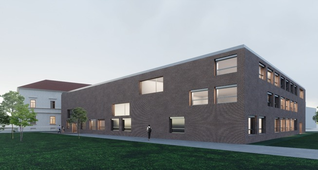
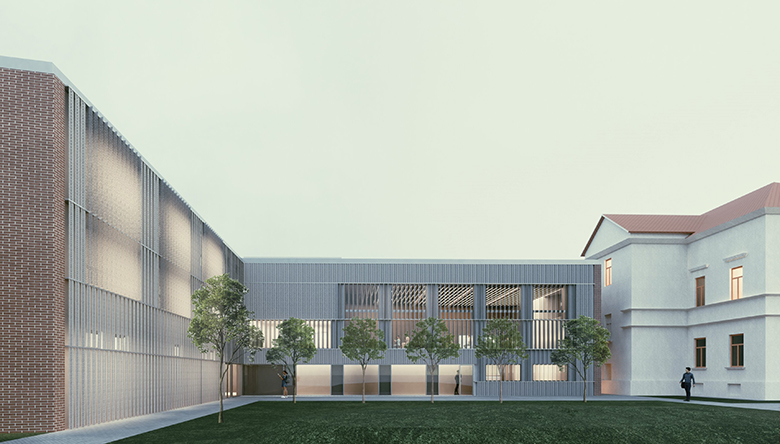
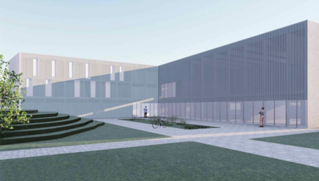
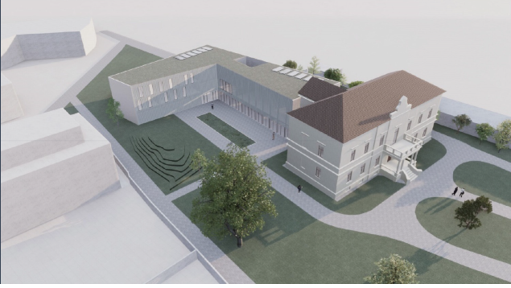
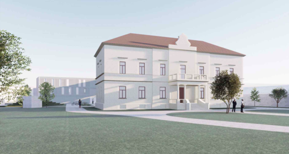

Pružiti znanje, mentorstvo i infrastrukturu za razvoj i provjeru ideja u njihovoj najranijoj fazi.

FOIward
O centru
O CENTRU
Centar u kojem ideje kreću FOIward
Regionalni centar za predinkubaciju u pametnoj industriji prvi je akademski centar takve vrste u Hrvatskoj, usmjeren na podršku idejama u njihovoj najranijoj i najosjetljivijoj fazi razvoja.
Postati vodeće središte sjeverne Hrvatske u kojem se ideje u najranijoj fazi pretvaraju u održiva inovativna rješenja za pametnu industriju.
Prvi akademski predinkubator
Istraživačko i obrazovno znanje FOI-ja primjenjujemo u razvoju konkretnih ideja i inovacija.
Fokus na najraniju fazu
Podrška počinje dok je ideja još nerazrađena i treba razumjeti problem.
Istraživanje i prototipiranje
Razvoj i testiranje rješenja uz laboratorije i suvremenu infrastrukturu.
Regionalno povezan ekosustav
Povezujemo akademsku zajednicu, industriju, javni sektor i lokalne zajednice.
Fokus na pametnu industriju
Povezivanje poslovnih potreba sa suvremenim tehnologijama poput umjetne inteligencije, kibernetičke sigurnosti, automatizacije i Industry 5.0.
Cjelovita podrška na jednom mjestu
Edukacija, mentorstvo, istraživanje, infrastruktura i digitalni alati povezani su u jedinstven proces razvoja ideje.
NAŠ PRISTUP
Četiri dimenzije koje ideje pokreću naprijed
FOIward pristup objedinjuje četiri komplementarne dimenzije predinkubacije. Zajedno povezuju stjecanje znanja, ubrzani razvoj, istraživanje i praktičnu razradu ideje – od početnog problema do provjerenog koncepta i odluke o sljedećem koraku.
Workshops
Radionice i tečajevi za razvoj poduzetničkih, poslovnih, istraživačkih i tehnoloških znanja.
Access
Otvoren pristup predinkubacijskom programu, znanju, mentorima, tehnologiji i mreži partnera za sve koji žele razvijati svoju ideju.
Research
Istraživanje korisnika, tržišta, tehnologije i podataka radi donošenja odluka na temelju dokaza.
Development
Razvoj ideje u koncept, prototip, poslovni model i izvediv plan uz podršku AI alata.
Uči. Istraži. Provjeri. Razvij. Kreni FOIward.
INFRASTRUKTURA
Suvremena infrastruktura za razvoj ideja
U Varaždinu se razvija više od 1.500 m² suvremeno opremljenog prostora za učenje, istraživanje, suradnju i testiranje ideja. Istodobno će se u partnerskim gradovima i općinama opremiti Lokalne točke razvoja, čime će osnovni prostorni i tehnološki uvjeti za razvoj ideja biti dostupni korisnicima diljem regije.
Smart Living Labovi
Istraživanje i testiranje rješenja s korisnicima u stvarnim ili simuliranim uvjetima
Edukacijski i prezentacijski prostori
Radionice, predavanja, predstavljanje ideja i događanja
Prostori za timski rad
Razvoj ideja, mentoriranje, savjetovanje i suradnja
Opremljene Lokalne točke razvoja
Prostori i oprema za početni rad na idejama, lokalne aktivnosti, savjetovanje i povezivanje sa središnjim Centrom.
Istraživački laboratoriji FOI-ja
Ekspertiza 19 laboratorija za razvoj, tehnološku provjeru i unapređenje inovativnih rješenja. Saznaj više





PROJEKTNI PARTNERI I LOKALNE TOČKE RAZVOJA
Regionalna mreža koja podršku približava korisnicima
Grad Varaždin, gradovi Novi Marof i Ludbreg te općine Gornji Kneginec, Sveti Ilija i Vidovec partneri su na projektu Regionalnog centra za predinkubaciju u pametnoj industriji. U partnerskim sredinama djelovat će Lokalne točke razvoja – mjesta prvog kontakta, informiranja i usmjeravanja građana, poduzetnika, timova i organizacija prema programima i uslugama Centra.

NACIONALNA I MEĐUNARODNA SURADNJA
Partnerstva koja povezuju ideje sa znanjem i praksom
Regionalnu mrežu projektnih partnera i Lokalnih točaka razvoja Centar nadograđuje suradnjom sa strateškim IT partnerima, inovacijskim centrima, tehnološkim parkovima, sveučilištima i stručnim udrugama u Hrvatskoj i inozemstvu.